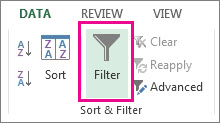
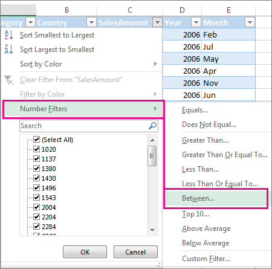
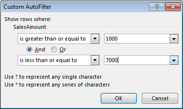
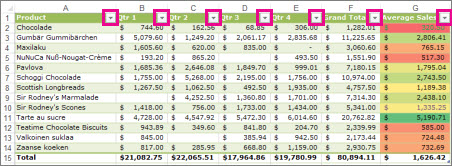
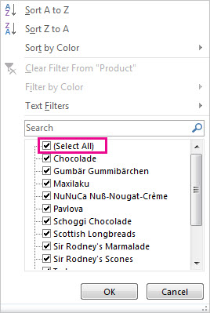

Filter data in a range or table
Use AutoFilter or built-in comparison operators like "greater than" and “top 10” in Excel to show the data you want and hide the rest. Once you filter data in a range of cells or table, you can either reapply a filter to get up-to-date results, or clear a filter to redisplay all of the data.
Filter a range of data
-
Select any cell within the range.
-
Select Data > Filter.

-
Select the column header arrow  .
.
-
Select Text Filters or Number Filters, and then select a comparison, like Between.

-
Enter the filter criteria and select OK.

Filter data in a table
When you put your data in a table, filter controls are automatically added to the table headers.

-
Select the column header arrow for the column you want to filter.
-
Uncheck (Select All) and select the boxes you want to show.

-
Click OK.